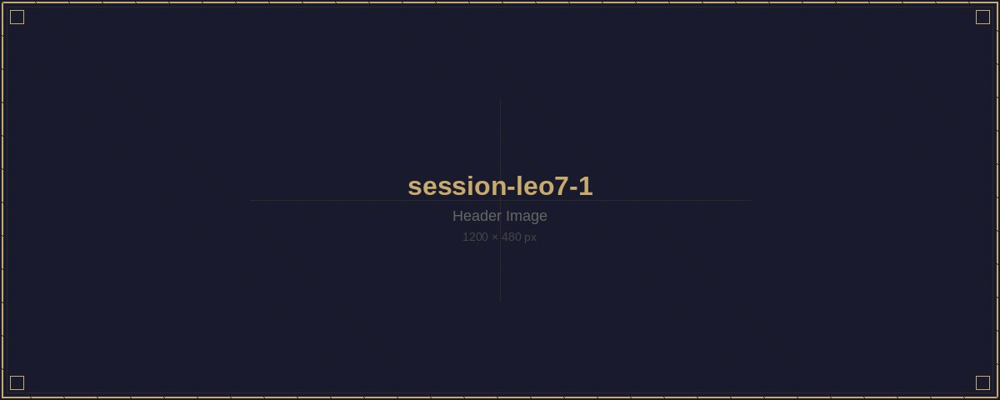
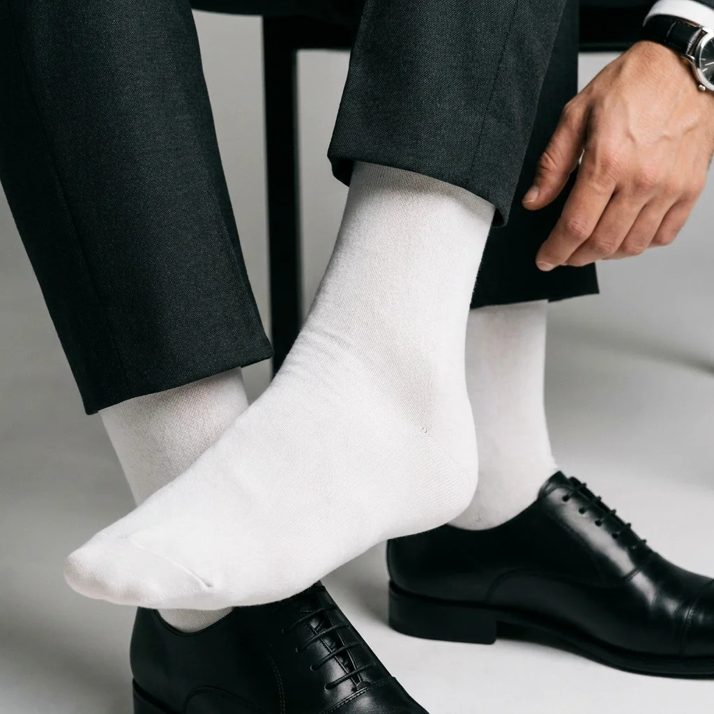
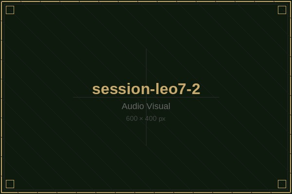
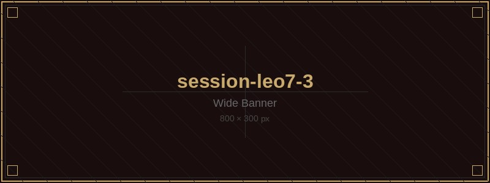
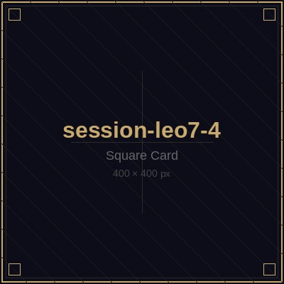
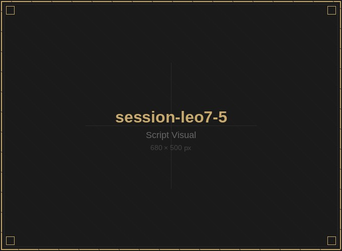
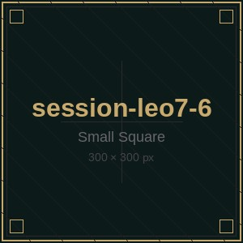
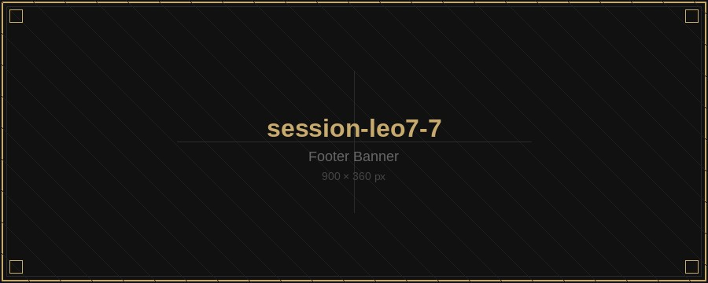

Your session
materials.
Audio, video and script resources prepared for you personally. Everything here is private and intended only for your use.

White socks are mandatory?
Why…
This is not a dress code. It is a precision tool.
Maximum signal clarity.
The brain loves precision and strong cues. White socks create the sharpest visual contrast against dark business shoes, office floors, and training surfaces. That contrast signals the nervous system immediately: “Something new begins here.” As you slowly remove them, the bright white sharpens focus on the motion — accelerating the shift from beta waves (stress) to theta waves (recovery).
White = reset.
Psychologically, white represents clarity and a fresh start. Dark socks carry the associations of work — the uniform, the performance, the pressure. The white sock functions as a neutral anchor. It helps you symbolically strip away the mental weight of the day. It is the functional signal that the performance is over — and active recovery begins now.
Three channels. One signal.
Following Milton Erickson’s principles, the deepest changes occur when visual, auditory and kinaesthetic input combine simultaneously.
The white sock adds the visual channel that anchors the trigger in the unconscious — and can reduce the standard 2–3 week conditioning window significantly.
A tool, not a trend.
Socks are about utility, not aesthetics. The white sock is the ultimate symbol of functionality — honest, direct, no noise. By making it mandatory, we underline the character of the Sock Anchor as a professional tool for high-performers who want to direct their focus to recovery without distraction.
“White socks are the light switch that tells your brain, unmistakably:
Done. Recover. Now.”
mindful7777 · Sock Anchor Protocol




Induction — Nature Edition
“Take a moment to truly arrive here…”
[Pause — 3 seconds]
“Find a comfortable spot — on the grass, against a tree, on a warm flat rock.”
[Pause]
“Let your weight drop. Feel the earth holding you up — solid, patient, completely reliable.”
[Pause — 3 seconds]
“Notice the sounds around you begin to soften… birdsong in the distance… the low hum of wind through the treetops… and the steady, unhurried sound of my voice guiding you deeper.”
[Long Pause — 5 seconds]
“Your body is heavy. Good heavy. The kind of heavy that only comes after you’ve given everything you had.”
[Pause]
“Now… very slowly… like peeling back the bark from a branch… millimeter by millimeter… pull those socks off.”
[Pause — take your time here]
“Feel the open air finally reaching your skin. Cool. Clean. Like the first breath after stepping out of the shade into a meadow.”
[Long Pause]
“And with it… let everything from today just release. The effort. The tension. The noise. It all slides away — like water off river stones.”
[Long Pause — 5 seconds]
“Your conscious mind can decide to remember to forget… or forget to remember… everything that happened today. It doesn’t really matter.”
[Long Pause]
“Because while your thinking mind drifts like a cloud moving across the sky… your deeper mind is right here. Listening closely.”
[Long Pause]
“Everything is fine. Everything is still. Nothing is wrong.”
[Pause]
“You already carry everything you need for your perfect recovery. Your body knows how to heal. Your mind knows how to rest. Trust that.”
[Long Pause — 5 seconds]
“Give this feeling of deep stillness a color… Let it rise from the soles of your feet through your whole body… all the way to the horizon.”
[Long Pause]
“Your inner voice says clearly: I’ve got this. I’m exactly where I need to be.”
[Pause]
“Take all the time you need… and when you’re ready… come back. Open eyes. Easy smile. Stronger than before.”
[End]


Theta brain waves (4–8 Hz) appear at the boundary between wakefulness and sleep. A conditioned physical anchor (the sock gesture) reliably triggers this state once the neural pathway is established through daily repetition over 2–3 weeks.
Street — Any quiet moment. One shoe, one sock, 3 minutes.
After Training — Immediately after physical effort. Recovery starts now.
After Shower — Fresh socks in hand, not yet on. The strongest version.